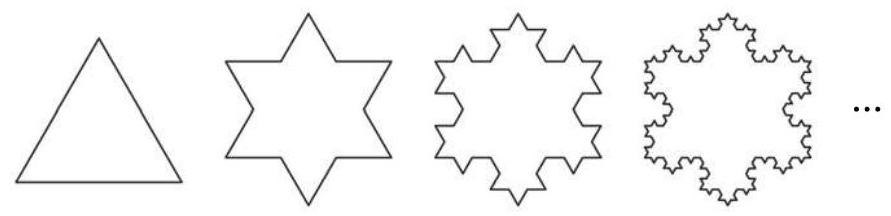
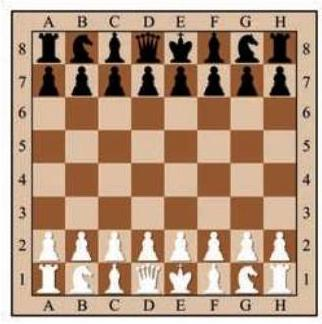
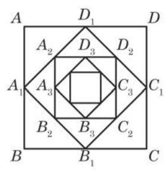
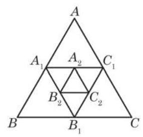
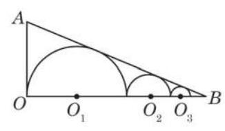

例题 1
例 1 设数列 为等比数列.
(1)已知 ，公比 ，求 ；
(2)已知 ，求 .
教师整合版 / 沪教版高中数学
选择性必修第一册
第4章数列 · 保留教材主线与原题
教材与正式教参整合
观察以下数列, 看这些数列有什么共同特点.
(1)-1 的 1 次幂、2 次幂、3 次幂、4 次幂……依次为
①
(2)科克雪花曲线. 即将一个边长为 1 的等边三角形的每条边三等分, 以中间一段为边向外作等边三角形, 并擦去中间一段, 如图 4-2-1, 如此继续下去得到图形的每条边的长度依次为
②

图 4-2-1
(3)图 4-2-1 中的每个图形的边数依次为
③
可以看到, 对于数列①, 从第 2 项起, 每一项与其前一项的比都等于 -1 ; 对于数列②, 从第 2 项起, 每一项与其前一项的比都等于 ; 对于数列③,从第 2 项起,每一项与其前一项的比都等于 4 .
这些数列有一个共同特点: 从第 2 项起, 每一项与其前一项的比都等于同一个常数.
既是等差数列又是等比数列的数列存在吗? 如果存在, 你能举出例子吗?
根据等比数列的定义,以 为首项、以 为公比的等比数列 满足 . 因此,当 时,有
由此可得, . 所以, . 而当 时,上面的等式也显然成立.
因此,当 为正整数时,等比数列 的第 项可表示为
例 1 设数列 为等比数列.
(1)已知 ，公比 ，求 ；
(2)已知 ，求 .
例 2 某种放射性物质不断衰变为其他物质, 设每经过一年剩余的这种放射性物质是年初的 84%. 这种放射性物质的半衰期约为多少? (结果精确到 1 年)
解 设这种物质最初的质量是 1,而经过 年,剩余量是 .
由条件可知,数列 是一个等比数列,且 , 公比 . 当 时,则 .
在上式两边同时取以 10 为底的对数, 并求解得
如果三个数成等比数列, 那么等比中项的平方必等于其前后两项的积.
答: 这种物质的半衰期大约为 4 年.
例 3 (1)已知 成等差数列，其公差为 . 求证: 成等比数列.
(2)已知正实数 成等比数列，其公比为 . 求证: 成等差数列.
证明 (1) 因为 成等差数列,所以 . 从而
所以， ， ， 成等比数列，其公比为 .
(2)因为正实数 成等比数列，所以 . 在上式两边同时取以 10 为底的对数, 得
所以, 成等差数列,其公差为 .
A. ; B. ;
C. ; D. .
(1)已知 ,求 ；
(2)已知 ，求 ；
(3)已知 ，求 ；
(4)已知 ，求 .
国际象棋起源于古代印度. 发明者将棋盘划分为 8 行 8 列, 构成 64 个方格. 相传国王要奖励该发明者, 问他有什么要求. 发明者说: “请在棋盘的第 1 个格子里放上 1 颗麦粒, 在第 2 个格子里放上 2 颗麦粒, 在第 3 个格子里放上 4 颗麦粒, 依次类推, 每个格子里放的麦粒数都是前一个格子里放的麦粒数的 2 倍, 直到放完 64 个格子为止. 请给我足够的麦粒以实现上述要求. ”这位发明者要了多少颗麦粒？国王能实现他的要求吗?

这实际上是求以 1 为首项、以 2 为公比的等比数列的前 64 项的和:
如果用公比 2 乘上述等式的两边, 就得到
可以发现, 上面两式中有许多相同的项, 两式相减可以消去这些项, 得到
这是一个二十位数, 将这些小麦折算成质量 (每千粒麦子的质量设为 40 ),会超过 7000 亿吨. 即使到小麦年产量比较高的现代，全世界小麦年总产量也远低于 10 亿吨，国王根本满足不了发明者的要求.
一般地,设等比数列 的公比为 ,其前 项和为
将上式两边同乘公比 ,可得
将两式相减, 可得
即
由此得到,当 时,等比数列 的前 项和为
因为 ,所以上式又可写为
而当 时,因为 ,所以 .
例 4 设数列 为等比数列,其前 项和为 .
(1)已知 ，公比 ，求 ；
(2)已知 ，公比 ，求 .
例 5 在等比数列 中,其前 项和为 . 已知 , ,求 .
例 6 已知数列 的前 项和为 . 当常数 满足什么条件时,数列 是等比数列?
解 当 时,可得 . 而当 时,
从而
于是,当且仅当 时,数列 是等比数列. 由上式, ,而 ,由 ,解得 .
若数列 的前 项和为 ,当 满足什么条件时，数列 是等比数列?
因此,当 时,数列 是等比数列.
(1)已知 ，公比 ，求 ；
(2)已知 ，公比 ， ，求 .
中国古代庄周所著的《庄子·天下篇》说:“一尺之棰，日取其半, 万世不竭. ”其含义是: 一根一尺长的木棒, 每天截取其一半, 这样的过程可以无限进行下去. 如果从第一天开始截取, 把木棒每天剩余的长度记录下来，可得到下面一个数列:
一个数列 中, 如果当 无限增大时, 的值越来越趋近于某个确定的数 ,那么称这个数列的极限为 ,记作 , 其中记号 是英文单词 limit (极限) 的缩写.
随着 无限增大,此数列的第 项 的值越来越趋近于零,从而 的极限为零. 记作 .
上述数列的前 项之和为
随着 无限增大, 的值越来越趋近于零, 的值越来越趋近于 1,从而 的极限为 1,记作 .
更一般地,对于首项为 、公比为 的等比数列:
当 时,此数列的前 项和为
随着 无限增大, 的值越来越趋近于零, 的值越来越趋近于 ,从而 的极限为 ,记作 .
如果一个数列 的前 项和为 ,则 表示 .
综上所述，以 为首项、 为公比的等比数列，当公比 时,有
例 7 化下列循环小数为分数:
(1)0.29； (2)0.431 .
解 (1) .
相应的无穷等比数列是 , ,其首项是 0.29,公比是 0.01,于是有
类似地,我们可以证明: .
(2) .
上述等式的右边除 0.4 外,相应的无穷等比数列是 ,其首项是 0.031 , 公比是 0.01 , 于是有
例 8 如图 4-2-2,正方形 的边长等于 1,连接这个正方形各边的中点得到一个小正方形 ; 又连接正方形 各边的中点得到一个更小的正方形 ; 如此无限继续下去. 求所有这些正方形的周长的和与面积的和.

图 4-2-2
解 由题设,可得到第 1 个正方形的边长 ,第 2 个
正方形的边长 ,第 个正方形的边长
所有这些正方形的边长组成的数列为
从而所有这些正方形的周长组成的数列为
这是一个以 4 为首项、以 为公比的等比数列,因此所有这些正方形的周长的和为
所有这些正方形的面积组成的数列为
这是以 1 为首项、以 为公比的等比数列,因此所有这些正方形的面积的和为
(1) ;
(2)1.332 .

(第 3 题)
(1) 与 ；
(2) 与 .
(1)已知 ,求 ;
(2)已知 ，求 ；
(3)已知 ，求 .
(1)数列 ；
(2)数列 .
(1)已知 ，求 ；
(2)已知 ，求 ；
(3)已知 ,求 ;
(4)已知 ,求 .
7.(1) . (2) . (3) . (4) .
(1)当它第 10 次着地时,求它经过的总路程;
(2)它可能在某次着地时，经过的总路程超过 吗？如果可能，请说明是第几次着地首次超过 ；如果不可能，请说明理由.
(1) ,第 10 次着地时,经过的路程共有 299 .
(2)因为第 次着地时经过的总路程为 ,对任意给定的正整数 均有 . 因此,不可能在某一次着地时总路程超过 .
(1)求证:数列 为等比数列；
(2)若 ，求数列 的通项公式.
4.(1)提示:利用等比数列定义. (2) 或 .
(1)求证:数列 为等比数列；
(2)求前 个半圆弧长的总和 ；
(3)利用前 个半圆弧长的总和 的表达式,计算 .

(第 5 题)